SUPPORTING IMPLEMENTATION EVIDENCE
1. Project Overview
This phase of the SweetCrust Bakery Ltd Hybrid Identity Transformation project demonstrates the transition from traditional on-premises device management to a modern cloud-managed endpoint architecture using Microsoft Intune.
The implementation covers the complete endpoint lifecycle, including Windows Autopilot provisioning, Intune configuration profiles, compliance policies, Conditional Access enforcement, Microsoft Defender for Endpoint onboarding, Win32 application deployment, third-party application automation, and Mobile Application Management for BYOD scenarios.
2. Endpoint Enrollment & Provisioning
As part of the SweetCrust Bakery Ltd modernization initiative, Windows Autopilot was implemented to modernize endpoint provisioning and deliver a zero-touch onboarding experience. The deployment followed the complete lifecycle of an Autopilot-managed device, from profile creation and assignment through out-of-box experience enrollment and final endpoint configuration.
Designing the Autopilot Experience
The implementation began within the Microsoft Intune admin center under Devices > Windows > Windows enrollment > Deployment profiles. A dedicated Windows Autopilot deployment profile was created to define how corporate devices should behave during OOBE and to provide a cloud-first onboarding experience requiring minimal administrative intervention.
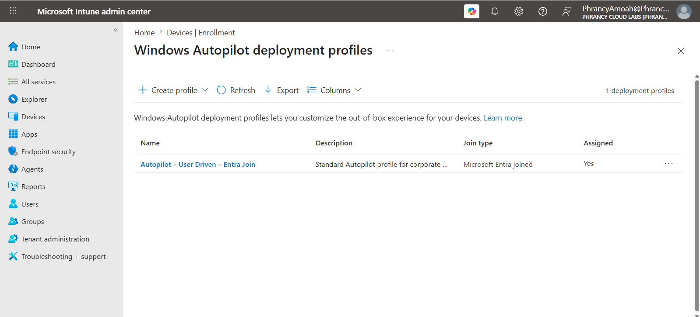
Configuring the Autopilot Deployment Profile
The deployment profile was configured as User-Driven / Microsoft Entra joined, which mirrors how modern corporate laptops are provisioned. This profile controls the Windows out-of-box experience, including:
- Automatic Microsoft Entra join instead of traditional domain join.
- Automatic Intune enrollment so the device becomes managed as soon as the user signs in.
- Simplified OOBE by skipping non-essential setup pages and guiding the user into corporate sign-in.
The profile was assigned to the appropriate device group so that any device registered with Windows Autopilot and added to that group would automatically receive the correct onboarding configuration.
Running the Autopilot Out-of-Box Experience
After configuration and assignment of the deployment profile, the endpoint was reset to trigger the Windows Autopilot provisioning workflow. During first boot, the device successfully contacted the Autopilot service, retrieved its assigned deployment profile, and presented the organization-specific onboarding experience.
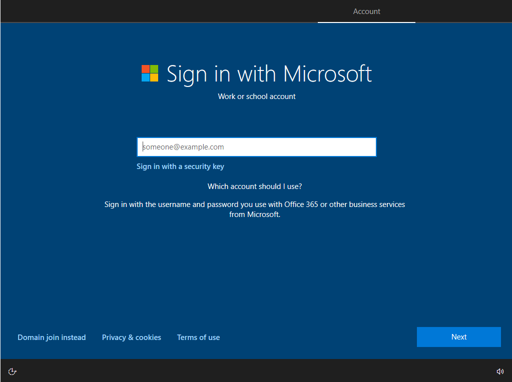
Evidence: The SweetCrust Bakery endpoint successfully retrieved its assigned Autopilot profile, confirming cloud-based provisioning and zero-touch onboarding readiness.
Completing Enrollment and Reaching the Desktop
From the Autopilot sign-in screen, a Microsoft Entra ID test account was used to authenticate and complete enrollment. This process automatically:
- Joined the endpoint to Microsoft Entra ID using the configured deployment profile.
- Enrolled the endpoint into Microsoft Intune for policy, compliance, and app deployment.
- Applied the organization's Autopilot settings to standardize the onboarding process.
After sign-in, the endpoint completed setup and reached the Windows desktop as a fully cloud-managed corporate device.
3. Device Governance & Security
SweetCrust Bakery Ltd required cloud-based device governance so that endpoints could be managed, secured, and evaluated without relying on constant on-premises Active Directory connectivity. Microsoft Intune was used to enforce configuration profiles, compliance policies, Conditional Access, and Microsoft Defender for Endpoint onboarding.
Configuration Profiles
Traditional domain-bound Group Policy was replaced with Intune Configuration Profiles to enforce cloud-managed endpoint settings. A DeviceLock CSP policy was used to apply an inactivity-based device lock configuration.
Policy Configuration
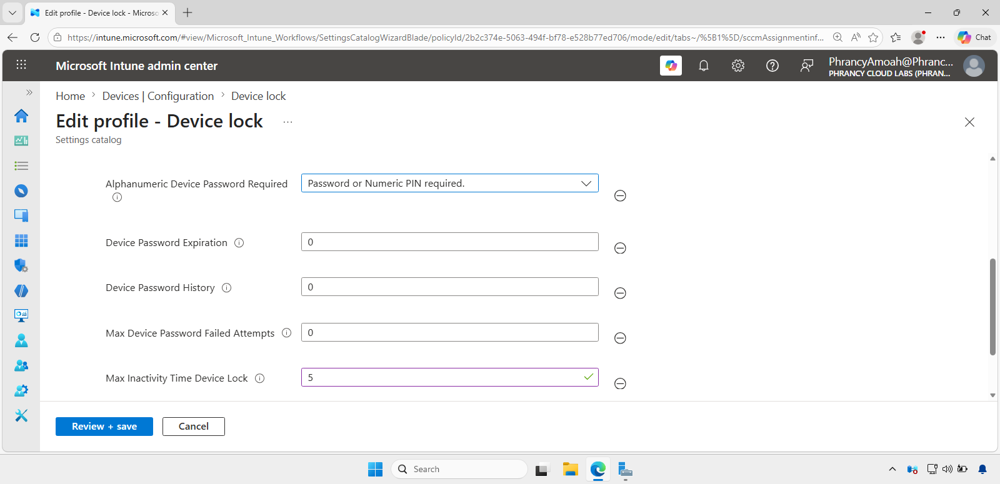
MDM Diagnostic Report
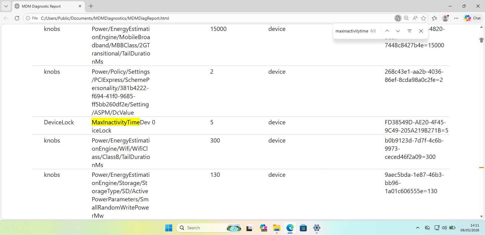
User Experience Validation
Evidence: The Intune policy successfully applied to the Windows endpoint and enforced the required inactivity lock setting, demonstrating cloud-based configuration enforcement.
Compliance Policies & Zero Trust Audit
A Windows security compliance policy was implemented to evaluate endpoint health before access to corporate resources. In a Zero Trust model, endpoint compliance becomes part of the access decision rather than a separate administrative report.
Defining the Security Audit
The compliance policy evaluated the following security requirements:
- BitLocker: Full operating system drive encryption.
- Antivirus: Microsoft Defender Antivirus active and reporting.
- Password: Alphanumeric password complexity and minimum password requirements.
Identifying Non-Compliance
During initial policy evaluation, the workstation was marked as Non-Compliant due to local password configuration gaps. This provided a realistic example of how Intune identifies endpoint posture issues.
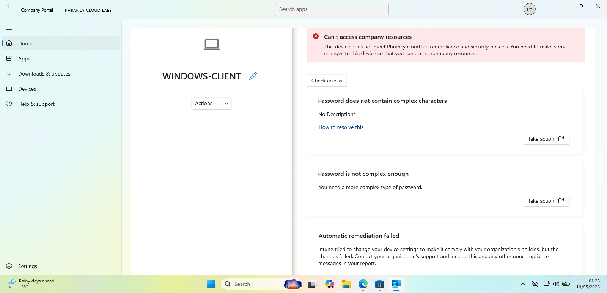
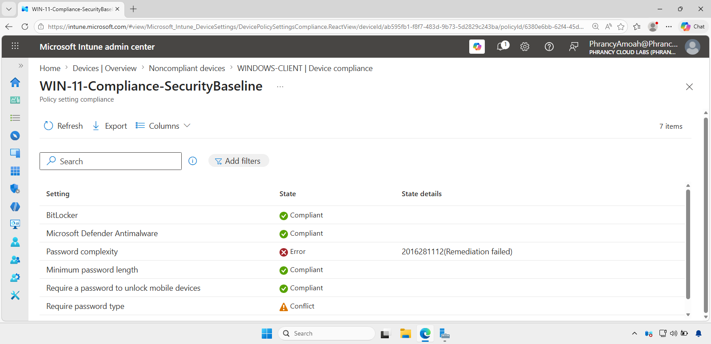
Engineering Insight: Compliance policy conflicts highlight the importance of aligning configuration profiles and compliance requirements. Poor alignment can cause policy conflict, repeated failures, or unclear remediation steps for end users.
Remediation & Success Verification
The password configuration issue was remediated and the endpoint was manually synchronized through Company Portal. After the next policy evaluation, the device returned to a compliant state.
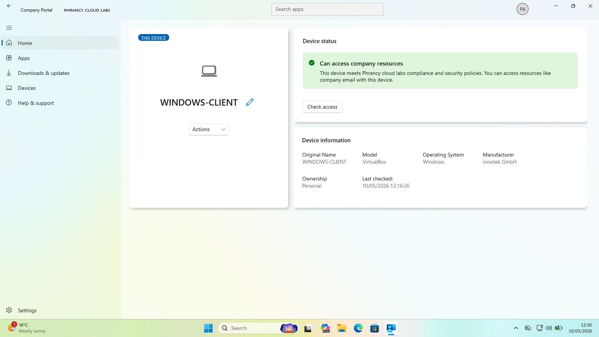
Evidence: Device compliance was restored following remediation, allowing the endpoint to satisfy organizational security requirements and re-enter the trusted device population.
Zero Trust Enforcement: Conditional Access
Conditional Access was used to require a compliant device state before allowing access to Microsoft 365 resources. This demonstrated how identity and endpoint posture combine to enforce Zero Trust access control.
Access Block Validation
Access to cloud resources was tested from a non-compliant posture. Microsoft Entra ID evaluated the session and blocked access because the endpoint did not meet the required compliance state.

Technical Note: Browser sign-in and device compliance rely on Microsoft Entra ID being able to evaluate the user, device identity, and compliance signal before granting access.
Access Granted After Remediation
After the endpoint was remediated and reported a compliant state, Microsoft Entra ID allowed access to Microsoft 365 services.
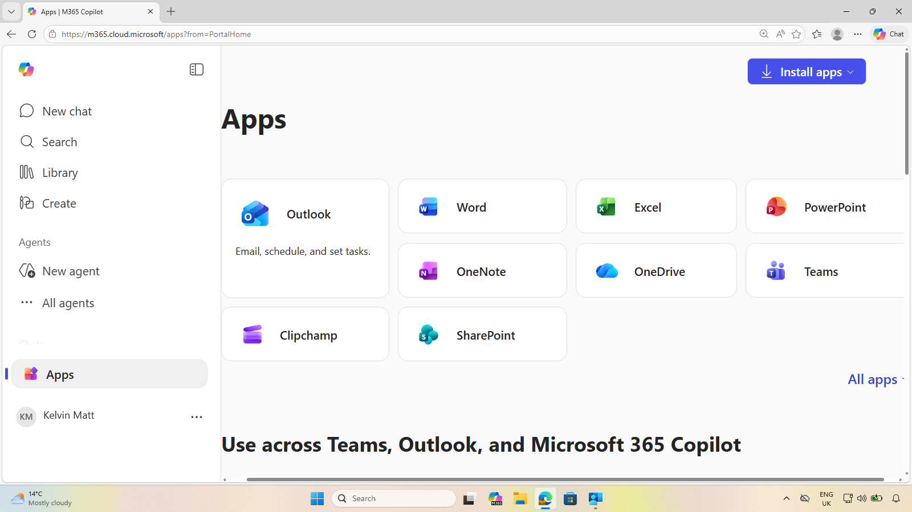
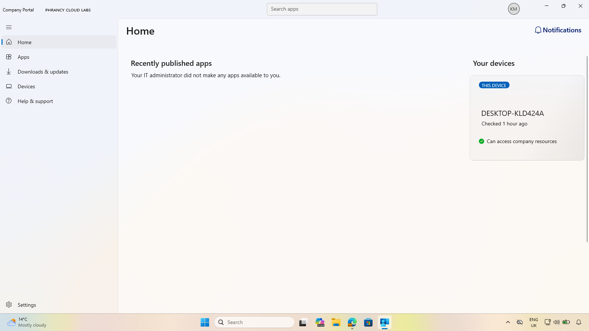
Evidence: Conditional Access correctly evaluated the compliant device state and granted access to Microsoft 365 resources according to Zero Trust policy requirements.
Cloud Endpoint Transformation
This phase demonstrated how SweetCrust Bakery Ltd could reduce dependency on legacy on-premises device management by registering endpoints directly with Microsoft Entra ID and managing them through Microsoft Intune.
The modernization workflow reduced dependency on traditional domain line-of-sight and created a stronger foundation for remote and hybrid work.
Key Technical Takeaways
- Cloud Policy Enforcement: Intune configuration profiles replace many traditional Group Policy use cases for cloud-managed devices.
- Identity-Based Access: Conditional Access uses user identity, device identity, and compliance state to make access decisions.
- Sync Awareness: Endpoint administrators must understand Intune check-in intervals and manual sync behavior during troubleshooting.
Microsoft Defender for Endpoint Onboarding
Microsoft Defender for Endpoint onboarding was configured through Intune to improve endpoint visibility and threat detection. Policy targeting was used to validate deployment scoping.
Policy Assignment Logic
The onboarding policy was targeted to a device group containing the Windows 11 endpoint while excluding the Windows 10 endpoint. This confirmed that Intune targeting logic was working as expected.
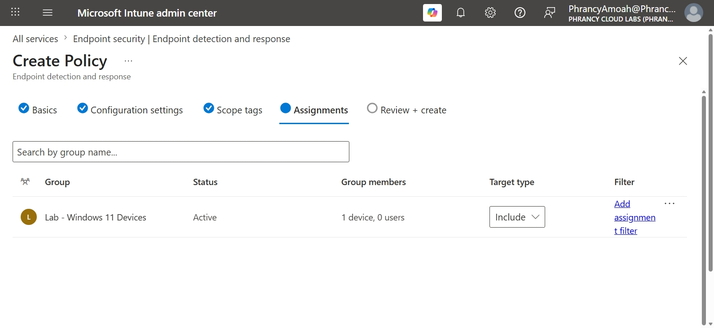
Endpoint Error Code 65000
Initial deployment reporting returned 65000, indicating that the policy reached the
endpoint but the onboarding execution did not complete successfully.
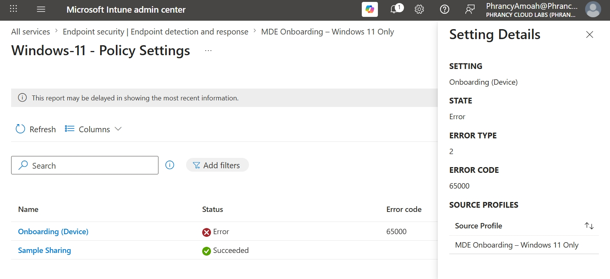
Root Cause: The endpoint identity state was valid, but local execution of the onboarding workflow was blocked. The issue was remediated by applying the Defender onboarding configuration through registry-based onboarding parameters.
Engineering Resolution
The Defender onboarding parameters were applied through the Windows Advanced Threat Protection registry path, followed by a system restart to initialize the SENSE service.
HKLM\SOFTWARE\Microsoft\Windows Advanced Threat Protection
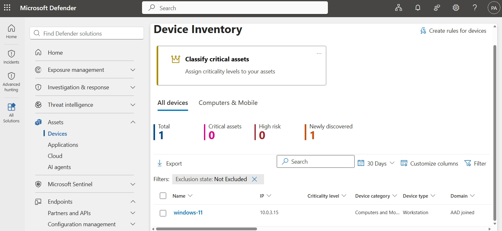
Evidence: The Windows 11 endpoint successfully onboarded into Microsoft Defender for Endpoint and began reporting security telemetry to the Defender portal.
Client-Side Behavior Verification
The local endpoint security interface displayed a managed state, confirming that enterprise security controls were being enforced centrally.
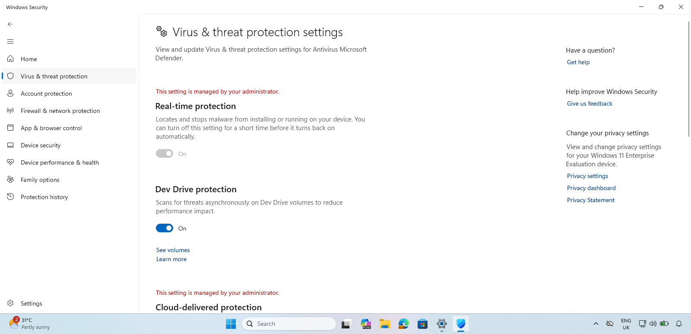
4. Application Management
Application management was modernized by replacing manual software installation with cloud-based application deployment workflows. Microsoft Intune and Action1 were used to test application packaging, assignment targeting, installation validation, and compensating controls.
Win32 Application Lifecycle Management
The Microsoft Win32 Content Prep Tool was used to package a traditional installer into a cloud-ready
.intunewin deployment format. This allowed the application to be assigned and installed
through Intune.
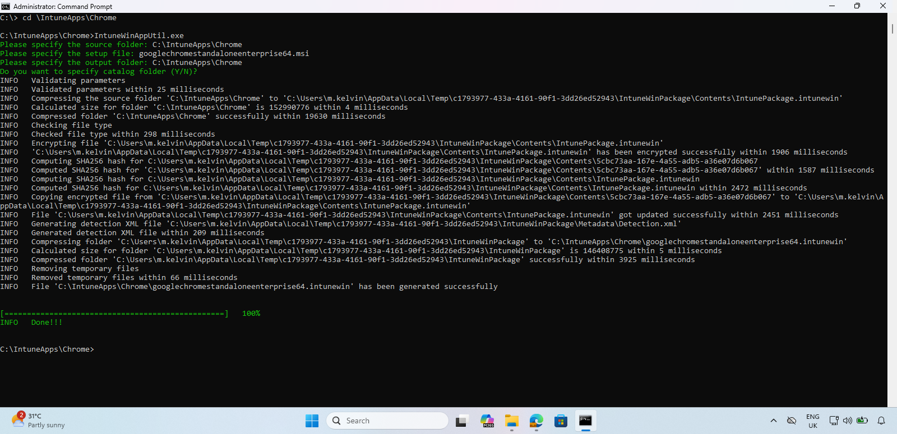
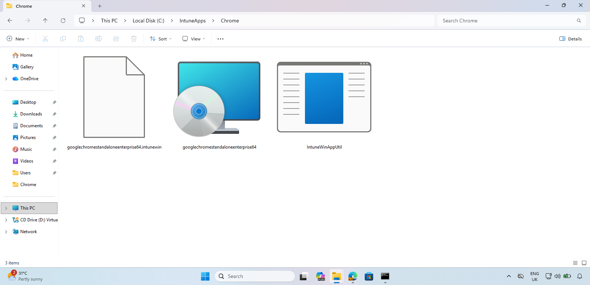
Deployment Assignment & Validation
The application was assigned to endpoint device groups so that current and future devices could receive the deployment without manual installation.


Evidence: Google Chrome was silently deployed through Intune application assignments, confirming successful Win32 application lifecycle management.
Third-Party Application Deployment: Foxit PDF via Action1
Action1 was used to test third-party software deployment outside the native Intune deployment workflow. This demonstrated another method for rapid software rollout and deployment history tracking.
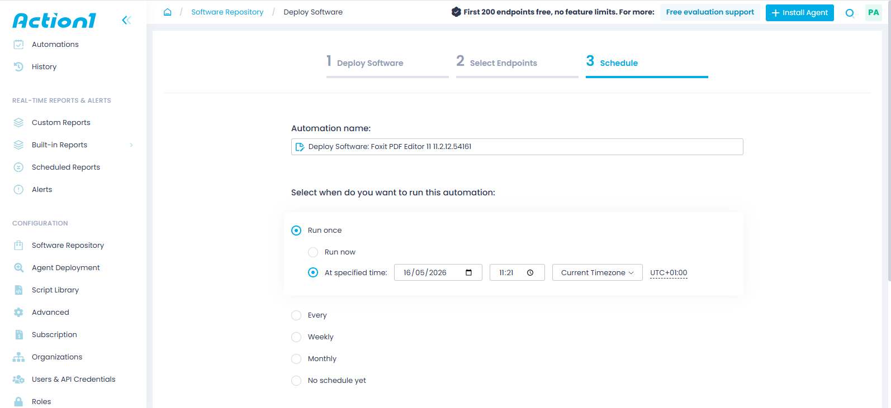
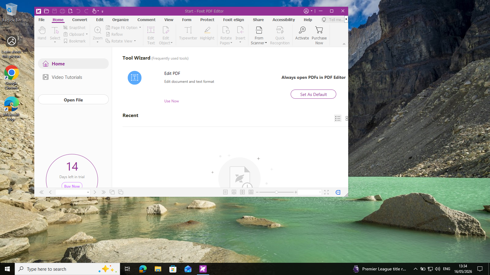
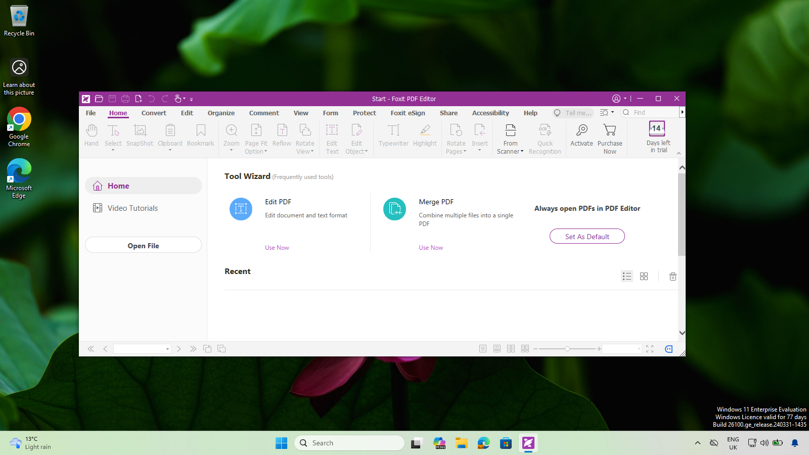
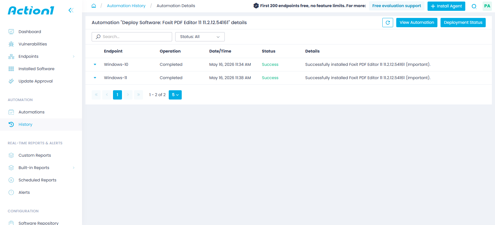
Vulnerability Response: Compensating Control
A Microsoft Edge vulnerability was identified during endpoint management testing. Because Edge updates are normally handled through Microsoft update channels, a compensating control was documented to reduce risk while awaiting the standard update cycle.
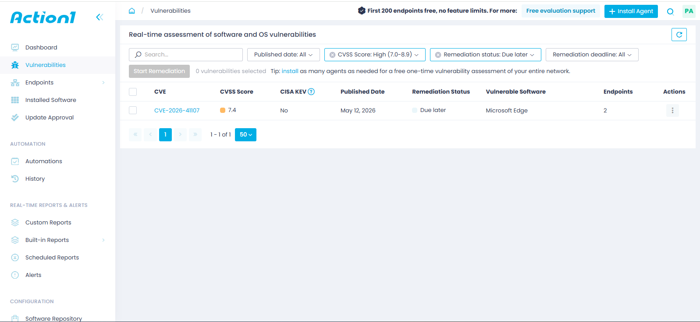
Documenting the Compensating Control
Governance Statement: Microsoft Edge updates are managed through official Microsoft update channels. As a compensating control, endpoint risk is reduced through Microsoft Defender SmartScreen, Intune compliance checks, Conditional Access enforcement, and endpoint monitoring.
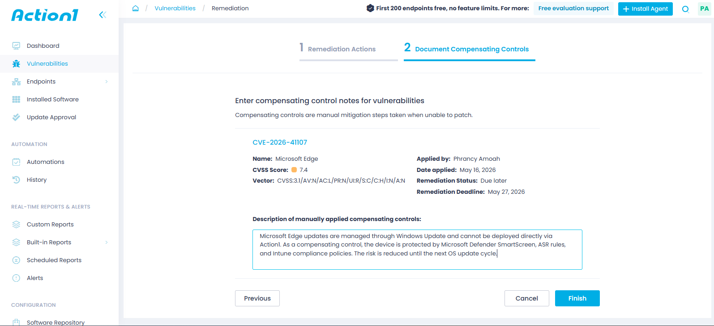
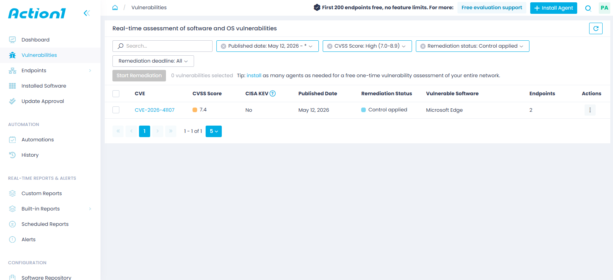
Mobile Application Management: BYOD Containment Matrix
Intune App Protection Policies were deployed to protect SweetCrust Bakery corporate data on unmanaged Android and iOS devices. This allowed corporate application data to be protected without requiring full device enrollment.
| Parameter | Configuration Setting Mapping |
|---|---|
| Target Identity Workspace | Kelvin — Lab tester persona account |
| Device Profile Context | BYOD infrastructure — unmanaged state |
| Enforced Policy Block | MAM-Android-Personal-BYOD-Policy / MAM-iOS-Personal-BYOD-Policy |
Security Architecture Conflict Resolution
Symptom: Android device entered a persistent authentication loop to Google Play Store.
Root Cause: Conditional Access rules required full MDM enrollment, blocking standalone app-layer protection.
Resolution: Grant controls were adjusted to accept App Protection Policy enforcement as the required access condition.
Android App PIN Protection
Mechanism: Requires an app-level PIN before corporate application data can be accessed on an unmanaged Android device.
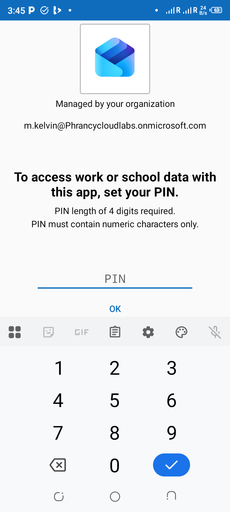
Android Data Loss Prevention
Mechanism: Blocks protected corporate data from being copied into unmanaged personal applications.
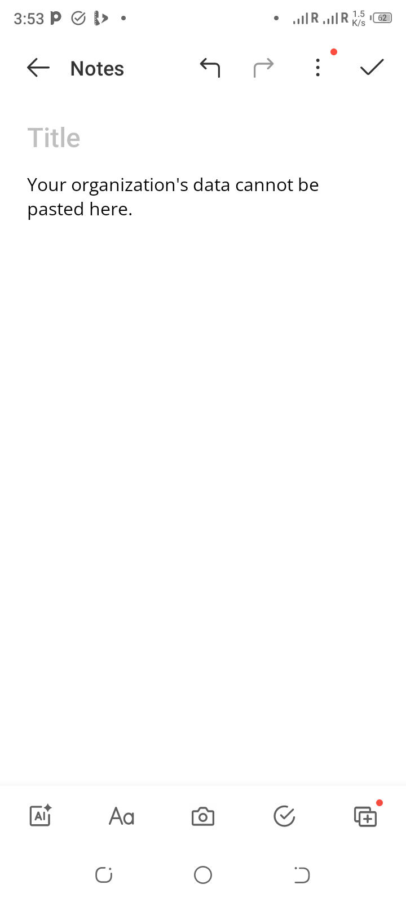
iOS Managed Browser Enforcement
Mechanism: Forces corporate links and attachments to open inside an approved managed browser.
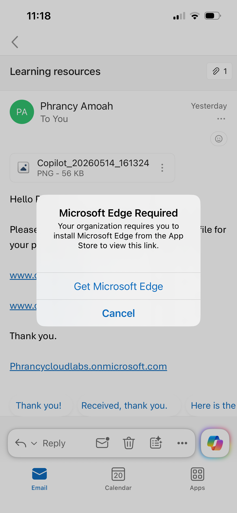
iOS Screenshot Protection
Mechanism: Prevents corporate content from being exposed through local screenshot capture.
Evidence: App Protection Policies successfully protected corporate data on unmanaged Android and iOS devices without requiring full device enrollment.
Security Impact
- BYOD Privacy: Personal devices were not fully enrolled, preserving user privacy.
- Corporate Data Protection: Data remained protected inside managed applications.
- Data Loss Prevention: Copy, paste, browser routing, and screenshot restrictions reduced exfiltration risk.
5. Technical Evidence
Evidence captured throughout this phase includes Windows Autopilot provisioning, Intune Configuration Profiles, Compliance Policies, Conditional Access, Microsoft Defender for Endpoint onboarding, Win32 application deployment, Action1 software automation, and Mobile Application Management.
6. Validation
- Validated Windows Autopilot deployment from out-of-box experience to managed desktop.
- Verified Microsoft Entra ID join and Intune enrollment.
- Confirmed Configuration Profile enforcement through CSP reporting.
- Verified Compliance Policy remediation and compliance state transitions.
- Validated Conditional Access blocking and post-remediation access.
- Confirmed Microsoft Defender for Endpoint onboarding.
- Verified Win32 application deployment success across endpoints.
- Validated Android and iOS Mobile Application Management data protection controls.
7. Phase Takeaways
- Modern endpoint management reduces dependency on traditional on-premises device management.
- Intune Configuration Profiles provide cloud-native policy enforcement for Windows endpoints.
- Compliance Policies and Conditional Access form the foundation of Zero Trust endpoint access control.
- Microsoft Defender for Endpoint improves endpoint visibility and threat detection.
- Win32 packaging enables scalable software deployment across distributed workforces.
- Mobile Application Management protects corporate data on personal devices without requiring full device management.
- This phase completes the transition from traditional identity management to a modern cloud-managed endpoint ecosystem for SweetCrust Bakery Ltd.